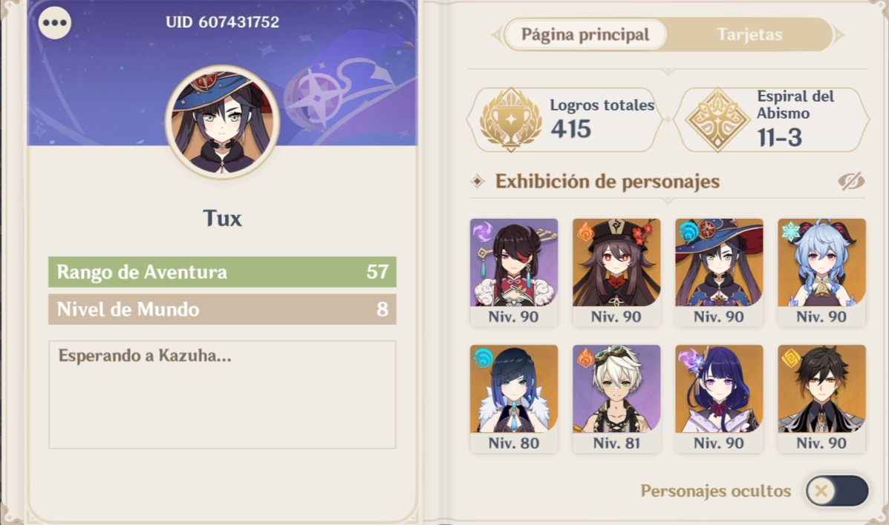

Genshin Impact
Genshin Impact es posiblemente el juego al que mas tiempo le he dedicado resientemente, lo comencé a jugar durante las vacaciones de verano del año pasado ya que mis amigos y yo queriamos probar nuevos juegos; debo decir que si me envicié bastante con el juego actualmente lo sigo jugando ya que me gusta bastante aunque ya no le dedico tanto tiempo como antes ya que tengo un poco mas de tareas o me dedico a estudiar pero en cualquier caso genshin impact es de mis juegos favoritos que sin duda seguiré jugando por varios años mas
